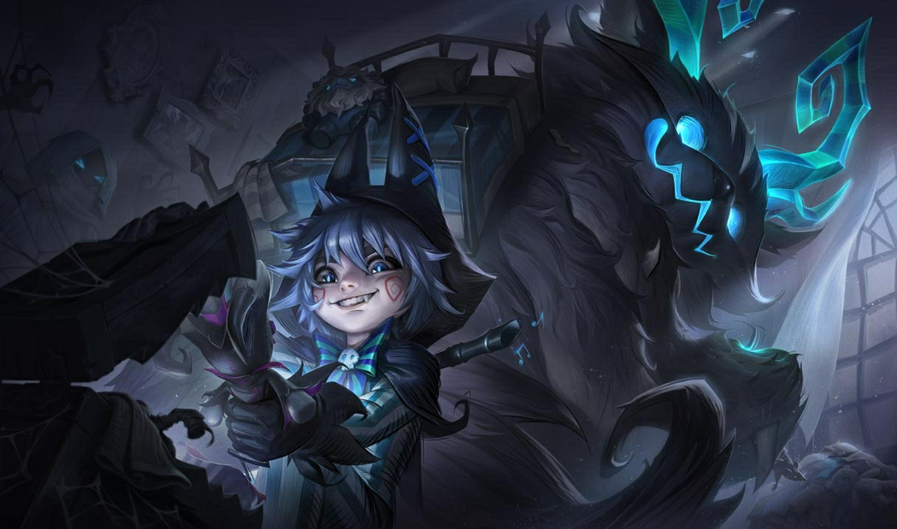
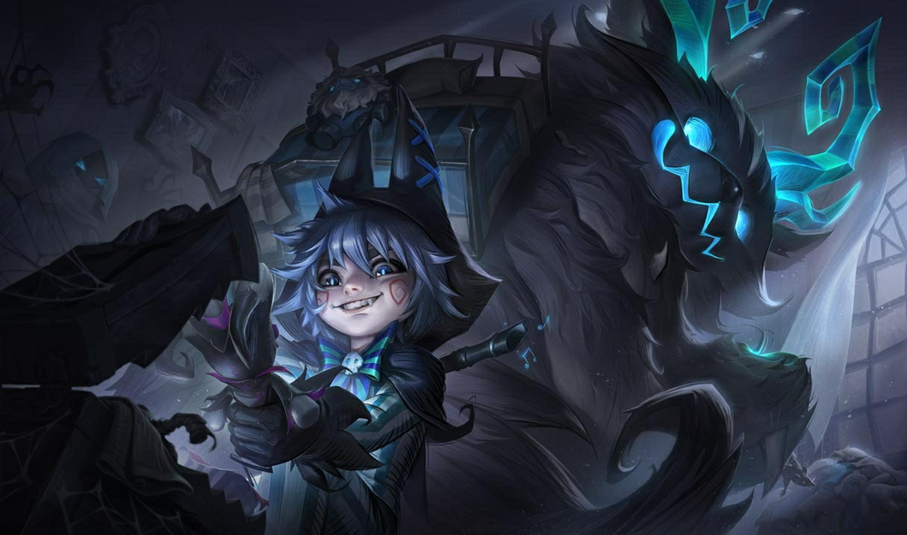

Habilidades

Llamada de Freljord

Voracidad

¡La Bola Más Grande de la Historia!

Alud de Bolas

Cero Absoluto
Llamada de Freljord
Pasiva
Una habilidad pasiva que proporciona un pequeño escudo a Nunu & Willump.


 
